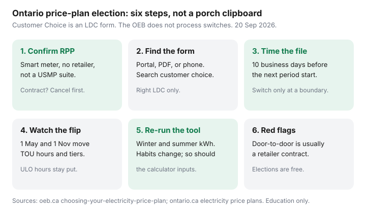

Utilities · Canada
How to Switch Your Ontario Electricity Price Plan (Election Form Checklist)
People know Ultra-Low Overnight exists and then stall on the paperwork. A switch electricity price plan Ontario utility election is not an OEB login and not a retailer contract. You file a Customer Choice request with the utility that prints the bill — Toronto Hydro, Hydro One, Hydro Ottawa, Alectra, or another local distribution company (LDC).
Price the clocks first in TOU vs ULO vs Tiered and the OEB calculator workflow. If delivery is the line you do not understand, read bill anatomy before you file. This page is the form, the calendar, and the red flags.
Disclosure: There is no natural affiliate product in a free utility election. Saving Optimizer does not claim OEB or LDC partnerships. This is education — not a switch service or legal advice.
Key takeaways
- You must be on the Regulated Price Plan with a smart meter, no retailer contract, and not a unit-sub-meter (USMP) suite. The OEB does not process elections.
- Search “[your utility] customer choice” or “price plan election.” Toronto Hydro, Hydro One, Alectra, and Hydro Ottawa all document a portal, PDF, phone, or mail path.
- OEB rule: a complete form at least 10 business days before the next billing period must take effect that period. A switch only starts on a billing-period boundary. Some portals say 10 calendar days — believe the confirmation email.
- TOU hours and Tiered thresholds flip 1 May and 1 November. ULO hours do not. Re-run the calculator when your habits or the season change.
- You can switch again later. Doing nothing leaves you on the current plan. A door-to-door “enrolment” is usually a retailer contract, not a free election.
Confirm you are on the Regulated Price Plan (not a retailer contract)
Open a recent bill. If the Electricity line shows Off-peak / Mid-peak / On-peak, ULO bands, or Tier 1 / Tier 2, you are almost certainly on RPP. If it shows a company name that is not your LDC, a “contract price,” or a Global Adjustment line sitting beside a fixed ¢, you are on a retailer. Cancel that first if you want Customer Choice back — your first RPP bill may still open on TOU.
Eligibility (ontario.ca electricity price plans page, used 20 Sep 2026): residential or small general-service under 50 kW peak, buying commodity from the utility, smart meter installed. Unit sub-meter provider customers cannot elect; the building’s principal consumer can. Bulk-metered buildings are the same idea. If a third-party logo prints the kWh, stop and ask who the “principal consumer” is.
New-move accounts: pick the plan on the move-in form if the LDC offers it. A transfer after you already started on TOU still needs a second request.

Find your LDC election form (Toronto Hydro, Hydro One, Hydro Ottawa, etc.)
| LDC (examples) | Typical path (used 20 Sep 2026) | Search phrase |
|---|---|---|
| Toronto Hydro | My Account Customer Choice; PDF fallback; phone | Toronto Hydro customer choice |
| Hydro One | Account portal price-plan / Customer Choice request | Hydro One choose your price plan |
| Hydro Ottawa | Online request documented on the residential rates / choice pages | Hydro Ottawa electricity price plan |
| Alectra and others | Self-serve or a Customer Choice Request Form | [utility] customer choice election |
Have the account number and a recent bill in hand. The form asks which plan you want — TOU, ULO, or Tiered — not “the cheap one.” If the portal rejects you, it will usually say why: retailer contract, no smart meter, or USMP. That rejection is useful. Do not keep submitting the same PDF.
Timing: when switches take effect and summer/winter period flips
Official OEB choosing-your-electricity-price-plan rule (used 20 Sep 2026):
- Within 10 business days the LDC must reject the form with a reason or tell you when the new plan starts.
- If they have a complete form at least 10 business days before the next billing period, the new plan must start that period.
- Inside that window they may still make it — or they wait until the period after. You stay on the old clock until the boundary.
Toronto Hydro’s consumer page has phrased a similar idea as 10 calendar days. Believe the confirmation email over a blog. Calendar the cut-off from your bill’s period dates, not from the day you meant to click.
Separate calendar: 1 May and 1 November. TOU on-peak and mid-peak hours flip. Tiered thresholds flip (600 kWh summer, 1,000 kWh winter). ULO hours stay put; the 39.1 ¢ weekday 4–9 p.m. block does not take the summer off. Filing in April does not freeze winter TOU hours into July.
Re-running the OEB calculator before each seasonal habit change
An election is not a personality test. Habits move: a heat pump in January, a window air conditioner in July, a Level 2 charger in the driveway, a new night shift. Re-run the OEB bill calculator when any of those change — and again at the May/November flip if you live on the fence.
Bring winter and summer kWh, your LDC, and interval or TOU-band data if you have an EV or electric heat. Compare the all-in estimate including delivery and the 23.5% OER. A $40 year is not a project. The full input list is in the calculator how-to.
If you elected ULO for a car that now charges at 6 p.m. in a shared condo stall, the 39.1 ¢ block is the bill. File again. Nothing about the first form is permanent.
What happens if you later want to switch back
You file another election. Same 10-business-day / billing-period rules. There is no OEB loyalty penalty and no “you already used your switch.” Doing nothing leaves you on the current plan while prices still update each 1 November.
Practical notes:
- You stay on the old plan until the next eligible period start. Mid-cycle regret does not rewind the meter.
- Equal billing / budget billing does not elect a clock. If you are on an equal-payment plan, ask the LDC whether a price-plan change triggers a review. See equal billing.
- Peak Perks and other demand-response credits are separate paperwork. You can be on any RPP clock and still enrol.
Red flags: door-to-door retailer contracts vs free plan choice
A clipboard on the porch that wants a signature, a void cheque, or a “we’ll enrol you in Ultra-Low Overnight” story is usually a retailer contract, not Customer Choice. Free elections do not need a credit check and do not charge an exit fee. Contracts can. Compare them in retailer vs utility rates.
- The OEB does not door-knock. Your LDC does not need you to “renew RPP.”
- If you already signed, you have a 10-day cooling-off after you acknowledge the written contract, plus later cancellation rights. Use them. Do not wait for the third bill to get curious.
- USMP and retailer limits are why a helpful neighbour’s form may not apply to your suite.
If the honest calculator gap is smaller than the hassle of remembering a 4–9 p.m. blackout on the oven, stay on TOU and seal the attic.
Sources & date stamps
- ontario.ca, Electricity price plans — eligibility, USMP/bulk-meter limits (page updated 9 Sep 2026; used 20 Sep 2026).
- OEB, Choosing your electricity price plan — 10-business-day acknowledgement; switch only at a billing-period start; retailer and USMP limits.
- OEB, Bill calculator — official TOU / ULO / Tiered comparison including delivery and OER.
- Toronto Hydro, Customer Choice / For home customer choice — portal, PDF, retailer-contract ineligibility.
- OEB electricity rates — RPP 1 Nov 2025–31 Oct 2026; seasonal TOU hours and Tiered thresholds flip 1 May and 1 Nov.
Frequently asked questions
Does the OEB switch my Ontario electricity price plan if I use the bill calculator?
No. The calculator is an estimate. File a Customer Choice election with your LDC. The OEB does not process switches.
How much notice does my utility need?
OEB rule: if the LDC has a complete election at least 10 business days before the next billing period, the new plan starts that period. Some portals say 10 calendar days. A switch only starts on a billing-period boundary.
Can I switch back after I try Ultra-Low Overnight?
Yes. File another election. You stay on ULO until the next eligible billing-period start. There is no loyalty penalty.
Can a condo on a unit sub-meter file an election?
Usually no. USMP-billed suites cannot elect; the building’s principal consumer can. Confirm who prints the bill.
Is a door-to-door “price plan” the same as Customer Choice?
Almost never. A free LDC election does not need a contract or a credit check. A porch clipboard is usually a retailer. Read the paper before you sign.